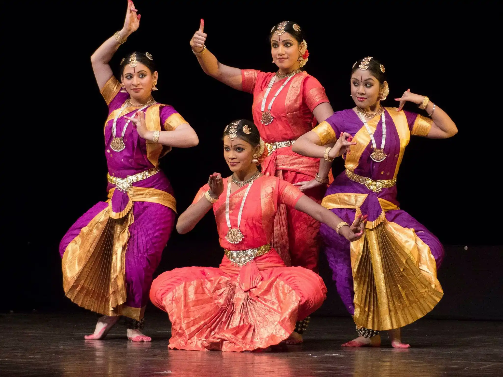

Apart from all extra curricular classes, hobby class means on the designated day (commonly wednesday) students attend a class of choice.There is an option called Non paid which means you don't have to pay this class which includes teaching dance,music,sometimes going for PE etc. The other hobby classes have a certain fee you need to pay. These hobby classes include:Kathak dancing,piano playing,guitar playing, drama etc.
